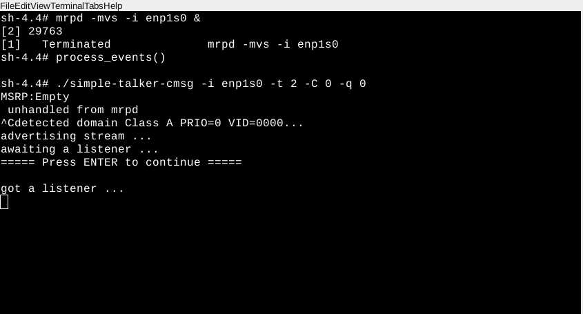

In this scenario, both Credit Based Shaper (CBS) and LaunchTime are disabled. Without CBS and LaunchTime technology, the transmission latency and jitter for time sensitive traffic becomes large and unbounded when best effort traffic is mixed with time sensitive traffic. Refer to IEEE 802.1Qav and IEEE 802.1Qat for details on this standard and the corresponding demo.
You can assign a name to the terminal on XFCE. Refer to Name a Terminal in XFCE. For this demo, the names of the terminal are listed above the command.
Follow these steps to run this demo scenario with no Qav:
$ ifconfig OR $ ip addr
[Board B]
Start ptp4l on Board B.
[Board B] Any Terminal
$ cd /opt/intel/iotg_tsn_ref_sw/scripts $ chmod a+x setup_sync.sh $ ./setup_sync.sh -i enp1s0 -b boardBwhere
| Argument | Description |
|---|---|
| -i enp1s0 | Specify to use interface enp1s0 |
| -b boardB | Specify that the script is running on board B |
ptp4l will be started immediately. Then, a terminal prompt requests users to press Enter to start phc2sys. Press Enter to launch the phc2sys terminal and proceed.
Two terminals will be displayed to show the ptp4l and phc2sys log messages.
[Board A]
Start ptp4l on Board A.
Run the following command:
[Board A] Ptp4l Terminal
$ cd /opt/intel/iotg_tsn_ref_sw/scripts $ chmod a+x setup_sync.sh $ ./setup_sync.sh -i enp1s0 -b boardAwhere
| Argument | Description |
|---|---|
| -i enp1s0 | Specify to use interface enp1s0 |
| -b boardA | Specify that the script is running on board A |
ptp4l will be started immediately. Then, a terminal prompt requests users to press Enter to start phc2sys. Press Enter to launch the phc2sys terminal and proceed.
Two terminals will be displayed to show the ptp4l and phc2sys log messages.
[Board B]
Start a new terminal and name it (Shift-Ctrl-S) Simple_Listener Terminal. Start the mrpd services for handling SRP registration over the network. Start the simple_listener application to receive time sensitive traffic only.
[Board B] Simple_Listener Terminal
$ cd ~ $ mrpd -mvs -i enp1s0 & $ simple_listener -i enp1s0 -f filename.wav
Where:
| Argument | Description |
|---|---|
| -m | Enable MMRP Registrar and Participant |
| -v | Enable MVRP Registrar and Participant |
| -s | Enable MSRP Registrar and Participant |
| -i | Specify interface to monitor |
[Board B]
Start a new terminal and name it (Shift-Ctrl-S) Iperf Terminal. Start iperf3 in server mode to receive best effort traffic.
[Board B] Iperf Terminal
$ cd ~ $ iperf3 -s
Where
| Argument | Description |
|---|---|
| -s | Run iperf3 in server mode |
[Board A]
Start a new terminal and name it (Shift-Ctrl-S) MRPD Terminal. Start mrpd services for handling SRP registration over the network.
[Board A] MRPD Terminal
$ cd ~
$ mrpd -mvs -i enp1s0 &
Where
| Argument | Description |
|---|---|
| -m | Enable MMRP Registrar and Participant |
| -v | Enable MVRP Registrar and Participant |
| -s | Enable MSRP Registrar and Participant |
| -i | Specify interface to monitor, enp1s0 in this case |
[Board A]
Start a new terminal and name it (Shift-Ctrl-S) Simple-talker-cmsg terminal. Start simple-talker-cmsg to transmit time sensitive traffic with both CBS and LaunchTime technology disabled.
[Board A] Simple-talker-cmsg Terminal
$ cd /opt/intel/iotg_tsn_ref_sw/simple-talker-cmsg $ ./simple-talker-cmsg -i enp1s0 -t 2 -C 0 -q 0Where
| Argument | Description |
|---|---|
| -i | Specify interface for AVB connection |
| -t 2 | Transport equal to 2 for 1722 packets |
| -C 0 | Posix clock selection to TAI |
| -q 0 | Set qdisc combination to disable mqprio, CBS and ETF |
[Board B]
Start a new terminal and name it (Shift-Ctrl-S) TCPDUMP terminal to capture the network packets and run it in the background.
[Board B] TCPDUMP Terminal
$ cd ~ $ tcpdump -i enp1s0 -s 50 -w filename.pcap -B 10000000000 -j adapter_unsynced --time-stamp-precision=nano &
Where:
| Argument | Description |
|---|---|
| -s | Set snapshot length of packets to 50 bytes |
| -w | Write to file filename.pcap |
| -B | Size in bytes (1 with 10 zeroes) |
| -j | Timestamp type set to adapter_unscynced |
[Board A] Start a new terminal and name it (Shift-Ctrl-S) Iperf Terminal. Type, ~BUT DO NOT EXECUTE~, the following command to start transmitting best effort traffic (we will execute this in Step 12). Use Board B's IP address. This step uses 169.254.0.2 as Board B's IP Address.
[Board A] Iperf Terminal
$ cd ~
$ iperf3 -c 169.254.0.2 -u -b 150M -l 1448 -t 30
Where
| Argument | Description |
|---|---|
| -c 169.254.0.2 | Run iperf3 in client mode, connecting to Board B iperf3 -s server on 169.254.0.2 |
| -u | Stream UDP packets |
| -b 150M | Set target bandwidth to 150M bits/sec |
| -l 1448 | Specify length of buffers to read or write |
| -t 30 | Specify time to run to 30 seconds |
[Board A] simple-talker-cmsg Terminal
Press Ctrl+C and then press Enter on the simple-talker-cmsg terminal of Board A. The simple-talker-cmsg starts communicating with simple_listener.

Press Enter to proceed.
A non-static IP address can change. Since your IP address may differ, start a new terminal (Ctrl-Shift-S) and run ifconfig on Board B again to check its IP address.
[Board B] New Terminal
$ ifconfig
In the Board A Iperf Terminal, execute the command typed in Step 9 to start transmitting best effort traffic. Use Board B's IP address. This step uses 169.254.0.2 as Board B's IP address, as shown in Step 1.
Run for up to 1 minute to capture packets.
[Board A] Iperf Terminal
$ iperf3 -c 169.254.0.2 -u -b 150M -l 1448 -t 30
Where:
| Argument | Description |
|---|---|
| -c 169.254.0.2 | Run iperf3 in client mode, connecting to Board B iperf3 -s server on 169.254.0.2 |
| -u | Stream UDP packets |
| -b 150M | Set target bandwidth to 150M bits/sec |
| -l 1448 | Specify length of buffers to read or write |
| -t 30 | Specify time to run to 30 seconds |
Press Ctrl+C on the simple-talker-cmsg terminal of Board A to stop the simple-talker-cmsg app.
[Board A] Any Terminal
$ pkill simple-talker-cmsg
Ctrl+C on the simple_listener terminal of Board B to stop the simple_listener app.
[Board B] Any Terminal
$ pkill simple_listener $ pkill tcpdump $ pkill iperf
Continue on the same simple_listener terminal of Board B to quit the mrpd, ptp4l, and phc2sys daemons that are running.
[Board B] Any Terminal
$ pkill mrpd $ pkill ptp4l $ pkill phc2sys
Switch to the simple-talker-cmsg terminal of Board A to quit mrpd, ptp4l and phc2sys daemons that are running.
[Board A] Any Terminal
$ pkill mrpd $ pkill ptp4l $ pkill phc2sys
Copy the tcpdump file filename.pcap to a USB flash drive so that data can be analyzed on the host machine. Refer to Mount the USB on Yocto Project* for instructions to mount the USB flash drive.
In this demo scenario, the simple-talker-cmsg application generates Stream Reserved (SR) Class A audio frames encoded in the IEEE 1722 format. The application is designed to send IEEE 1722 audio frames in batches, that is, sending a burst of 100 packets, then waiting for a while before continuing.
From the system's perspective, the simple-talker-cmsg application is the source of 8000 packet/second SR Class A audio frames as represented by the blue line in the figure below. Best effort traffic is generated by the iperf3 application and transmitted via the same Ethernet controller from Board A.
The following figure shows the transmission rate of two different types of traffic: time-sensitive (IEEE 1722 audio frames) traffic and best effort traffic (shown as a red line).
The figure below shows IEEE 1722 audio frames using Wireshark. The fourth column shows the inter-frame delta time. The inter-frame delta time between IEEE 1722 audio frames reflects the bursts of traffic transmission. IEEE1722 frames (about 5 µs to 8 µs apart) are transmitted, followed by a waiting period of about 10 ms before the next burst.
In summary, without enabling CBS and LaunchTime technologies and letting both best effort traffic and time-sensitive (IEEE 1722 audio frames) traffic into the same transmit queue, the traffic transmission of time-sensitive traffic has unbounded transmission latency and the transmission rate varies greatly. Without CBS or LaunchTime, the IEEE1722 audio frames are not moderated at transmission. In this scenario, the network sees a burst of IEEE 1722 audio frames as driven by the simple-talker-cmsg application.